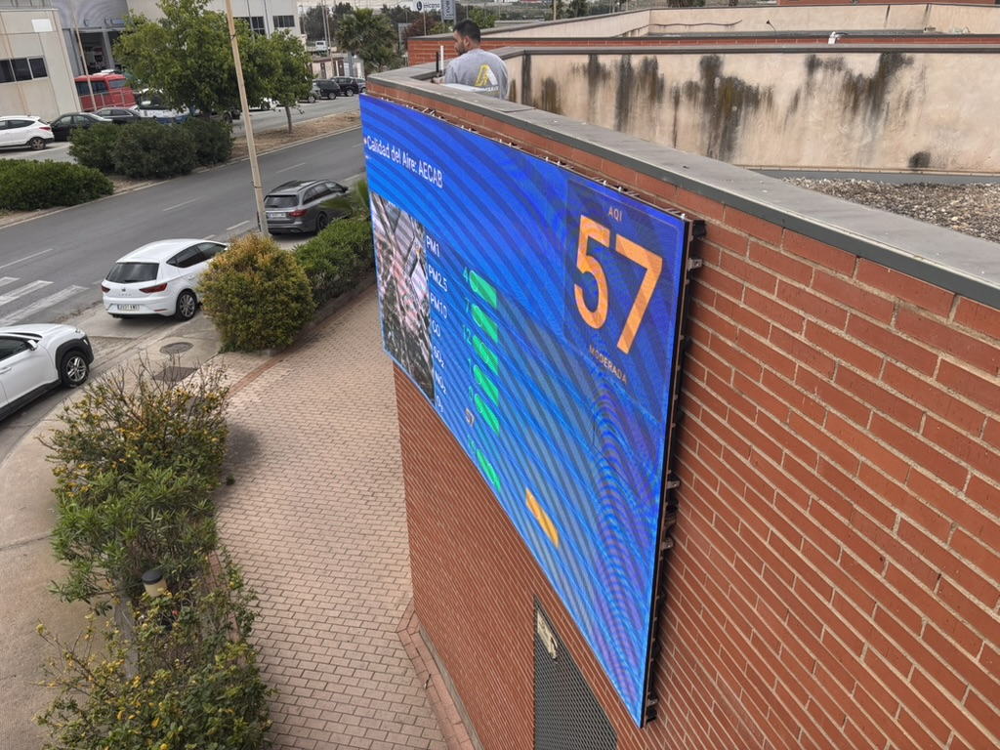
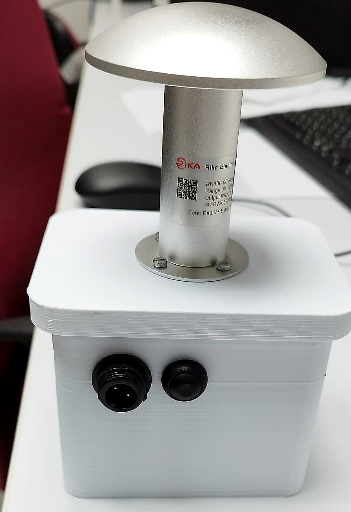
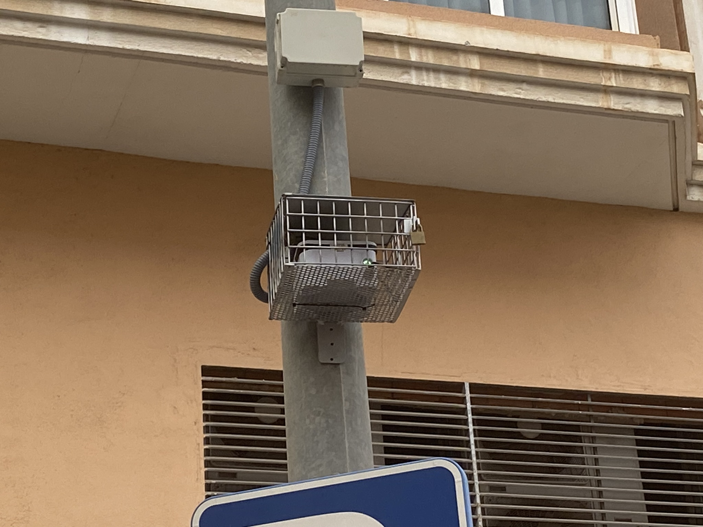

Umweltüberwachung im Industriegebiet
Ein klares Beispiel dafür, wie Qartia die Umweltüberwachung ins Feld bringt, mit realem Einsatz, kontinuierlicher Erfassung und operativer Auslesung der Daten.
Qartia hilft dabei, die Umweltüberwachung zu einem täglichen Arbeitsinstrument zu machen. Wir tun dies, indem wir IoT Sensortechnologie, Konnektivität, Dashboards und Analysen kombinieren, damit die Daten gut ankommen und zur Entscheidung dienen.
Wir überwachen kontinuierlich in Echtzeit Gase, Partikel, Lärm, Temperatur, Luftfeuchtigkeit und andere Variablen nach WHO-Kriterien und setzen all diese Informationen in Beziehung, um Veränderungen zu erkennen, Warnungen auszugeben und besser zu verstehen, was in jeder Umgebung passiert.
Projekte wie Cabezo Beaza (Cartagena), Atlantic Copper (Huelva) und der Stadtrat von Cartagena zeigen diesen Ansatz: Vor Ort einsetzen, die Daten stabil sammeln und für den Betrieb und die Überwachung in eine klare Visualisierung bringen.
Vor Ort wird die Kommunikation durch ein privates Netzwerk (LoRa/DECT NR+) unterstützt und der Zugriff auf das Internet kann über 5G, WiFi- oder Ethernet-Netzwerke erfolgen. Dadurch passt sich die Lösung besser an jeden Standort an und kann phasenweise wachsen.
Schließlich haben wir KI-Tools entwickelt, um auf der Grundlage der Daten unserer Sensoren zusammen mit anderen bereits installierten, beispielsweise lokalen, regionalen oder staatlichen Messstationen, zukünftige Werte von Schadstoffen vorherzusagen und gegebenenfalls Warnungen auszulösen.
Ein klares Beispiel dafür, wie Qartia die Umweltüberwachung ins Feld bringt, mit realem Einsatz, kontinuierlicher Erfassung und operativer Auslesung der Daten.
Stärkt die Fähigkeit von Qartia, in anspruchsvollen Industrieumgebungen zu arbeiten, in denen die Zuverlässigkeit und Rückverfolgbarkeit von Umweltdaten besonders wichtig sind.
Zeigt die Eignung von Qartia für Stadt- und Gebietsprojekte, bei denen die Umweltüberwachung für den öffentlichen Dienst verständlich, stabil und umsetzbar sein muss. Es hilft bei der Entscheidungsfindung in Aspekten wie zum Beispiel der Lage eines Parks oder einer Schule, der Verkehrsrichtung oder einfach, ob der Weg zur Arbeit durch eine kontaminierte Umgebung führt oder nicht.

Kontinuierliche Überwachung von Konzentrationen, Trends und Episoden in städtischen und industriellen Umgebungen.
Messung kritischer Umgebungsvariablen mit Sensoren, die für den realen Einsatz im Feld vorbereitet sind.

Erfassung und Nachvollziehbarkeit des akustischen Verhaltens für Betrieb, Stadt und Compliance.

Betriebsvisualisierung mit Historie, Alarmen und Schnellablesung für die technische Nutzung und Verwaltung.

Privates Netzwerk im Feld (LoRa/DECT NR+) und Internetzugang über 5G, WLAN oder Ethernet je nach Standort.

Phasenweise Bereitstellungen zur Validierung der technischen Auswirkungen, der Abdeckung, der Datenqualität und des Erweiterungsvorschlags.

Modelle zur Vorhersage zukünftiger Schadstoffwerte unserer Sensoren und anderer bereits installierter Stationen, mit der Möglichkeit, Warnungen auszulösen.

Konversationsabfrage zu erfassten Daten, um Muster, Statistiken, Vorhersagen zu erhalten oder schnell Informationen zu extrahieren.
Diese Art der Installation fasst den Ansatz von Qartia gut zusammen: Der Sensor wird im Feld eingesetzt, sammelt kontinuierlich die Daten und sendet sie an eine Plattform, wo sie nahezu in Echtzeit angezeigt und genutzt werden können.
Ein kompakter Ablauf zur Erfassung von Umgebungsvariablen, zur Sicherstellung der Kommunikation vor Ort und zur Umwandlung von Daten in Vorhersage, Erklärung und Reaktion.
Im Feld erfolgt die Kommunikation über ein privates Netzwerk und der Zugang zum Internet kann über 5G, WiFi- oder Ethernet-Netzwerke erfolgen. Dadurch können wir uns an die verfügbare Infrastruktur anpassen, ohne die Logik der Lösung zu ändern.
Umweltüberwachung für industrielle Aktivitäten, allgemeine Dienstleistungen und Entscheidungsfindung bei Vorfällen oder Abweichungen.
Einsatz in Einrichtungen, in denen Robustheit, Rückverfolgbarkeit und Koexistenz mit der vorhandenen Infrastruktur Priorität haben.
Projekte mit territorialer Lesart für kommunale Dienstleistungen, städtische Innovation und institutionelle Validierung.
Verteilte Überwachung mit Dashboards, Alarmen und integrierter Umgebungsmessung.
Standortauswahl, Umgebungsvariablen, Abdeckung und betriebliche Ziele.
Knoteninstallation, Konnektivitätsüberprüfung und Datenqualitätskontrolle.
Aktivierung der betrieblichen Visualisierung, Schwellenwerte und technischen Auslesung des Umweltverhaltens.
Ergebnisbericht, Erweiterungsvorschlag und Wachstumsarchitektur nach Zonen oder Variablen.
Fordern Sie ein Qartia-Pilotprojekt an und validieren Sie die Erfassung, Konnektivität und Nutzung von Umweltdaten in Ihrer industriellen, städtischen oder territorialen Umgebung.